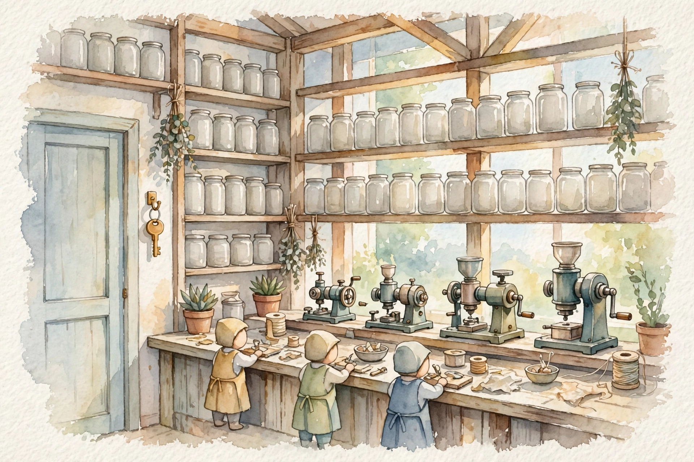
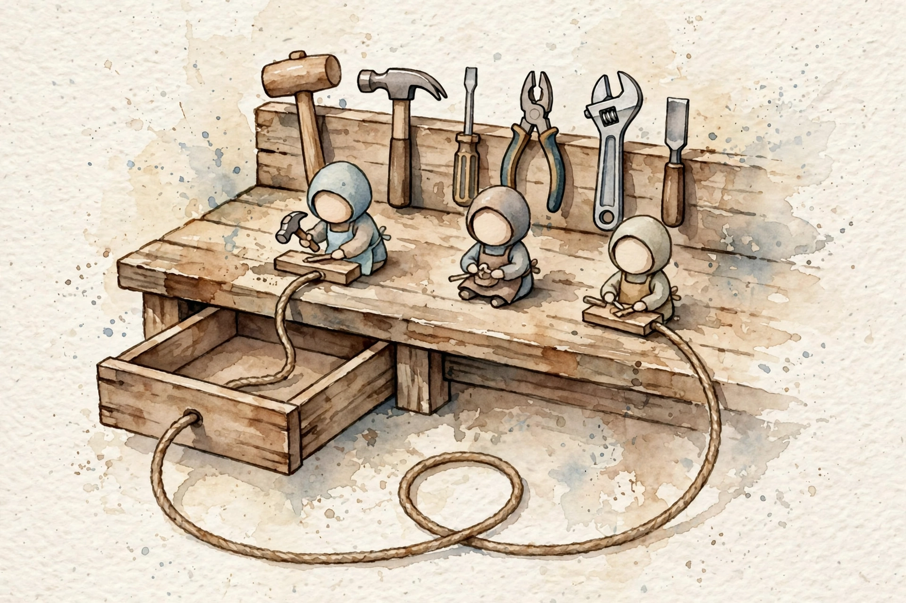
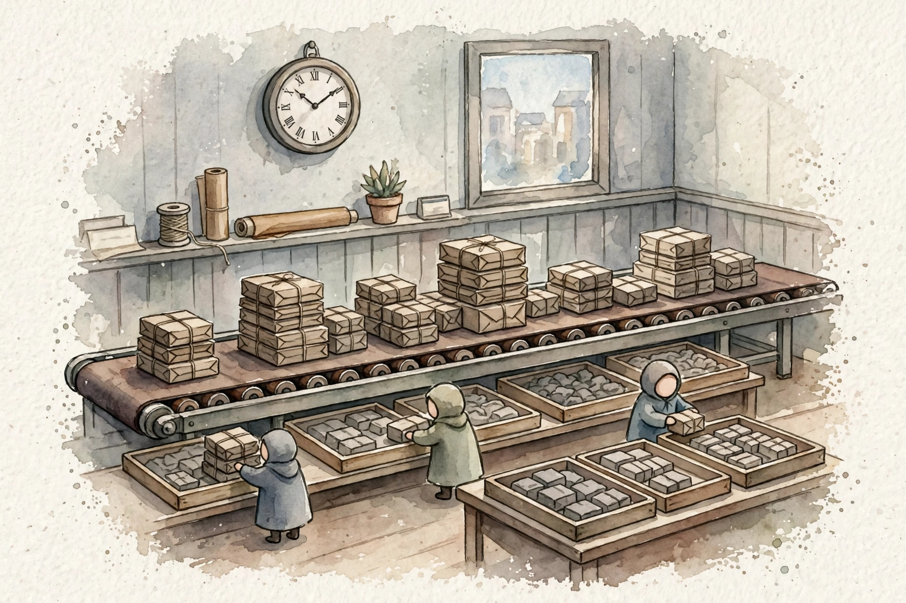
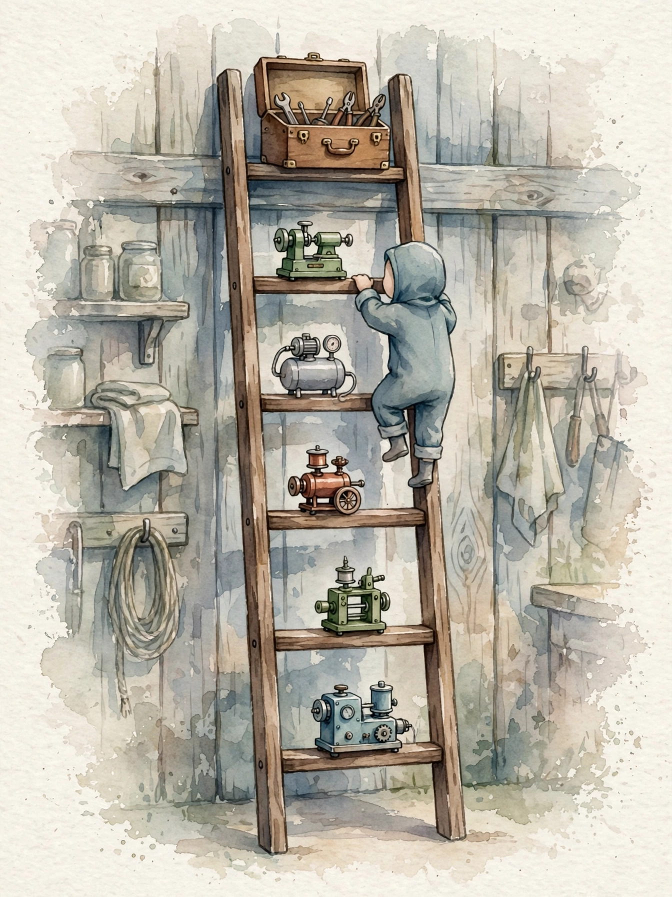

Companion · CCAR-P Prerequisite · Claude Developer Fundamentals
The prerequisite volume builds the Claude vocabulary the whole CCAR-P guide assumes. This companion walks it in source order: tokens, the API key, the first call, system prompts, memory, sample controls, tools, think work, cache work, batches, the embeddings gap, the model lineup, MCP, products, stream work, limits, errors, evals, safety, and the five prompt moves, up one capstone ladder.
SOURCE / INTERPRETATION: HOW TO READ THE TAGS
From the lesson SOURCE: the idea, and every number beside it, comes from the cited section of the source. The phrasing is the companion's.
Illustration INTERPRETATION: invented by the companion: an analogy, a toy with made-up values, or a what-if. Never source content.
companion INTERPRETATION: companion voice: the idea above the tag is from the source. The generalization below it is the companion's.

From the lesson How to use
This volume covers the Claude API for a CCAR-P candidate: what Claude is, keys, Messages, system prompts, multi-turn work, sample controls, and tool use. It adds think work, cache work, batches, and embeddings. It shows the model lineup, MCP, and Claude Code. It closes with stream work, rate limits, errors, evals, safety, prompt engineer fundamentals, and a capstone that connects all parts into one production application.
Read the volume once, front to back. Every topic is a visual ladder. Rung 1 gives the plainest mental model in one short paragraph. Each rung then adds exactly one layer of depth, until the full production-grade picture stands. A diagram sits at every rung. Each unit ends with a knowledge check: answer from memory before a look at the answers. All code is Python code on the Anthropic SDK, with real API shapes only. CCAR-P has no formal prerequisites. The exam guide, version 1.0 of July 2026 per the volume, recommends a software engineer foundation, about three years of systems architecture experience, and six months of hands-on production work with Claude. This volume covers the Claude part of that list. It does not teach software engineer work or systems architecture.
From the lesson Tokens
Claude is a large language model. It does one task: given text, it predicts the most probable next token, then the next token, and it continues until it decides to stop. A token is a piece of text: a word, part of a word, or punctuation. About four characters make one token. The word unbelievable splits into three tokens: un, believ, able. Context windows and prices count tokens, not words. A budget in words overflows the window you thought you had.
Everything you send becomes one long sequence of input tokens: your instructions, the conversation so far, the documents, and the tool definitions. Claude reads the whole sequence, predicts the next token, appends it, and repeats. The finished text is the output tokens. No other input channel and no other output channel exists. Tokens are the whole interface. Three numbers run the volume. The context window is how many tokens fit in one request: 200K to 1M tokens on current models. Max tokens is your limit on reply length. Price is the cost per token in and per token out, and output costs about 5 times more than input. Every knob in this volume buys more quality per token, or fewer tokens per task.
From the lesson API key
Your API key is a password that buys Claude answers. You show the key with every request, in the x-api-key header, and Anthropic bills your account for the use. The gateway checks the key first. A wrong key means the request does not run. A valid key opens the door, the request runs, and the response comes back.
The key lives in an environment variable, ANTHROPIC_API_KEY, and the SDK picks it up on its own. The key never sits in code, in a repository, or in chat. A leaked key lets anyone spend your money, so rotate the key at the Anthropic console the moment you suspect exposure. Some enterprise teams skip the direct API and call Claude through AWS Bedrock or Google Vertex AI with IAM roles in place of an Anthropic key. The request shape is the same. The front door differs. The exam cares that you know both paths exist.
From the lesson Messages API
The Messages API is the one endpoint all else in this volume builds on. A first call sends three required items: model, max_tokens, and messages. Model names the engine. Max tokens caps the reply length. Messages carries the conversation, as user and assistant turns in alternation. All else, system, tools, temperature, and cache work, is optional. The API is stateless: it remembers nothing between calls, and each request stands alone. The system merges two same-role messages in a row and does not reject them, and the volume warns that you must not rely on that behavior. No system role exists: system instructions are a top-level parameter. A prefill trick exists as well: end the array with an assistant message and Claude continues from that text, which steers exact formats such as JSON.
Read the response like a production engineer. Content is a list of blocks: text, tool_use, and thinking. Stop_reason tells you why the process stopped: end_turn means a finish, max_tokens means your cap cut the answer, tool_use means the model wants a tool call, and stop_sequence means a hit on your custom stop string. Usage carries the token counts you need for cost track work. The API accepts up to 100,000 messages per request. You will not hit that limit. You manage the context yourself.
From the lesson System prompts
A system prompt is the job description for Claude: the role, the rules it must follow, and the exact output format, given before the user speaks. Instruction layers run three deep: system, developer, and user, and each layer overrides the layer under it. A plain string works for simple instructions. A list of blocks permits per-block controls, such as cache marks on a system block.
Content splits into two kinds. The stable contract, persona, rules, and format, belongs in the system prompt, where it almost never changes. Data that changes per request, dates, user names, and request IDs, belongs in messages. The production rule: volatile content in the system prompt changes the prefix on every call and kills the cache hit rate in silence. A split done right makes cache work near free in the later unit. If user input can override system rules, a prompt injection is a polite request away.
From the lesson Multi-turn
One message gets one answer. The API remembers nothing between calls, so a conversation is you as the memory: you resend the full messages array every turn, with the new turn at the end. Turn 1 is one exchange. Turn 2 is the full turn 1 plus the new exchange. Turn 3 is all of it plus the next exchange. Send only the latest turn and the model loses the thread and contradicts itself.
Two consequences follow. Cost grows with history, because every turn resends every earlier token as input, so turn 50 costs more than turn 1. The prefill trick ends the array with an assistant message, and Claude continues the message, the cleanest way to force JSON output. The production fix for long conversations is compaction: summarize old turns into one block, or keep only a recent window. Tool results also travel in this array: tool_result blocks ride inside user-role messages, in the loop the tool unit builds.
From the lesson Sampling
Three knobs shape each answer. Temperature is a dial from 0.0 to 1.0, with a default of 1.0. At 0, Claude picks the most probable token almost every time: deterministic and reproducible output. Near 1, Claude samples in free form: varied and creative output. Use 0 for facts, extraction, and JSON. Use 0.7 to 1.0 for brainstorm work. Top_p, nucleus sample work, samples from the smallest token set whose combined probability passes the top_p value, with 0.9 as a common default. Top_k cuts candidates to the K most probable tokens: a small K gives safe, predictable output. Tune temperature or top_p. Do not tune both at the same time.
For exams and graded work, set temperature near 0. The 5.x generation caution closes the unit: those models use adaptive think work, their reason quality is set for default sample values, and extra randomness adds noise to the plan rather than brilliance to the answer. Leave sample values at default for these models unless the task requires a change. A high temperature on a factual task gives a different answer on every run.
From the lesson Tool use
A model without tools can only talk. Tool use lets it act: query your database, call your APIs, and read your files. The key insight the exam probes: Claude never runs your tools. It only asks. Your code runs them and hands the results back. You describe tools as JSON Schema. Claude emits a tool_use block when it needs data. You execute and return a tool_result block with the exact match ID. You repeat until stop_reason is no longer tool_use. One turn can hold several tool_use blocks: run independent calls at the same time and return all results at once.
Two tool families exist. Client tools run in your application: you define them, Claude requests them, and you execute them. Server tools run on the Anthropic side: web_search, web_fetch, code_execution, MCP connectors, and tool_search. You declare them and Anthropic executes them, and results arrive inside the response. The tool_choice parameter controls behavior: auto is the default, any forces at least one call, tool forces a specific tool, and none means pure text for the turn. Tool definitions count as input tokens on every call, so a system with 40 tools raises the cost of every request. Three classic failures close the unit. A loop omitted means the first tool request never becomes an answer. A tool_use_id mismatch gets a rejection from the API. An absent turn cap means a confused agent bills per lap forever. The client-tool diagram sets MAX_TURNS at 20 as the billing seatbelt. Build a client tool when the logic is yours: your database, your internal API, your business rules. Use an MCP server when the integration is standard: files, git, Postgres, Slack, and web search, where a maintainer already exists.

From the lesson Thinking
Some models think in a private scratchpad before they answer. You see the final answer. The scratchpad stays hidden, and you can ask for a summary of it. On the 5.x generation, adaptive think work means the model decides how much reason work a task needs, and you do not set a token budget. The volume reports, as of September 2026, that Opus 4.6 through 4.8 and Sonnet 4.6 support it, that it is off by default on 4.7 and 4.8 and must be set in explicit form, that the API rejects a manual budget_tokens value with a 400 error on those models, and that Fable 5 and Mythos 5 always run adaptive think work with no off switch. Models in the 5.x line also show effort levels, from low through xhigh, as a simpler control.
Production rules: think blocks carry a signature, an integrity seal that must pass back unmodified in later turns, or the API rejects the call. Think work costs output tokens, so long reason work on simple tasks wastes money. A display value of summarized gives users a readable summary of the reason work in user-facing products, never the raw scratchpad. Skip think work on a hard task and the answer is a guess in a confident tone.
From the lesson Prompt caching
Every request reprocesses its input tokens. Prompt cache work lets you pay the full price to process a long, stable prefix once, then pay only 10 percent of the input price to reuse it for five minutes. A cache hit needs the request to start with the exact cached bytes, in order. Any content above your cache_control checkpoint stays cached, and the API processes content under it fresh. Reorder the content or change one byte in the prefix and the result is a miss. Match work is positional, not by content. The order is the contract. Design rule: stable content first, system prompt, tool definitions, and reference documents, and volatile content last, time stamps and user input. Never change tools or models mid-conversation, because a new tool list is a new prefix.
The numbers: a maximum of 4 breakpoints per request. Write price is 1.25 times base input for a 5-minute TTL, and 2 times for a 1-hour TTL. Read price is 0.10 times base input. Break-even sits at about 2 reads for a 5-minute write and about 3 reads for a 1-hour write. The minimum cacheable prefix is 512 tokens on the newest models and up to 4,096 tokens on some older ones, with Opus 4.6 and 4.5 and Haiku 4.5 at 4,096 per the volume. Measure TTL from the start of the request that wrote the cache. The verification habit: check the cache read token count in usage on every call. A count near zero means your prefix shifts and you pay write prices for no gain. Cache a prefix when the same long prefix repeats across requests. Skip cache work when each request is new, when the prefix is shorter than the minimum, or when traffic is so sparse that the 5-minute TTL always expires between calls.
From the lesson Batches API
Some workloads do not need an answer now: nightly evaluations, bulk classification, and backfill work for labels. The Batches API processes your requests within 24 hours and charges 50 percent of standard prices. One million input tokens on Sonnet 5 cost $2.00 at the standard rate of $2 per million. A batch of the same tokens costs $1.00. Same tokens, same model, half the bill, in exchange for a wait of one day.
The mechanics: one batch holds up to 100,000 requests or 256 MB. Each request carries your custom_id, 1 to 64 characters: letters, digits, hyphen, and the low line mark, and the ID returns with its result so you can match requests to results. Poll the process status as it moves from in progress to ended. Each result is succeeded, errored, canceled, or expired. The system keeps results for 29 days, then deletes them, so download them. Batches do not support stream work, and cache behavior in batches is best effort. A batch check in the volume: 40,000 requests sit under the 100,000 limit with room to spare.

From the lesson Embeddings
Embeddings change text into lists of numbers, vectors you can search by meaning rather than by keywords. Embeddings power RAG retrieval, semantic search, and cluster work. The gap: Anthropic has no embeddings API. The Claude API returns text. It returns no vectors, and no endpoint makes embeddings from your documents. The official documents direct you to Voyage AI, the recommended embeddings provider in the volume account. You call Voyage for embeddings, store the embeddings in your vector database, retrieve the relevant chunks, and feed those chunks to Claude as context. The exam trap is direct: any question that asks which Anthropic endpoint returns embeddings has one correct answer. None exists.
From the lesson Model lineup
The lineup has four tiers, from the cheapest to the most expensive, and the price pattern tracks capability. You do not need benchmark scores for the exam. You need the selection logic. Route by task, not by prestige: Haiku handles extraction and format work, Sonnet handles reason steps, and Opus or Fable handles the few decisions where error is expensive. A model that hits a 429 at step 4 of a 12-step pipeline is not a genius. It is a bottleneck.
Family IDs, such as claude-sonnet-5, track the latest snapshot on their own. Dated IDs pin one exact snapshot. Pin the snapshot for reproducibility in evals. Track the family for freshness in production chat. A 1M context window means you can send a million tokens, not that you should: cache creation cost and latency grow with the amount you send. Effort levels on 5.x models, low through xhigh, give coarse control over reason depth. The price math compounds: batches cost 50 percent of list, cache reads cost 10 percent of input price, and a Haiku batch call with a warm cache runs about two hundred times cheaper than a cold Fable call, per the volume estimate. The honesty notes at the end of the volume give the price table as of September 28, 2026: Fable at $10 in and $50 out per million tokens, Opus at $4 and $20, Sonnet at $2 and $10, and Haiku at $1 and $5.
From the lesson MCP
Without a standard, every app rebuilds the same integrations: N apps times M tools, with every pair built by hand. The Model Context Protocol turns N times M into N plus M. Each app speaks MCP once. Each tool does the same. Any pair connects. MCP is an open standard, published by Anthropic in November 2024 per the volume, and it runs on JSON-RPC 2.0.
Three roles and three primitives carry the protocol. The host is the application the user touches, such as Claude Code or your chat UI, and it controls the conversation and the permissions. The client lives inside the host, one client per server, and speaks the protocol for the host. The server exposes capability: tools the model can call, resources the model can read, and prompts as reusable instruction templates. Add a third integration and you add one client and one server, and the pairs in place do not change. Inside the Claude API, MCP appears as server tools, called MCP connectors: you declare the connector and Anthropic runs it on its infrastructure, and results arrive in the response. Client tools run your code by contrast. Build a client tool when the logic is yours. Use an MCP server when the integration is standard and a maintainer already exists.
From the lesson Claude Code and Agent SDK
Two ways give you agents without a hand-built tool loop. Claude Code is the Anthropic terminal agent: it edits code, runs shell commands, and reads your repo on its own. The Agent SDK is the toolkit to build your own agents in Python or TypeScript, on the same loop primitives. The CLI is the finished product. The SDK is the build block. Use Code when a human drives. Use the SDK when your code drives. A script of the CLI as if it were an SDK inherits a human interface: prompts, waits, and surprises.
Claude Code runs every action through a permission gate with three settings. Allow means routine reads run in free form. Ask means destructive commands need approval. Deny means the system blocks the command. Your rules decide the setting for each action, in the same gate pattern the volume draws between a tool choice and its execution: plan, choose, gate, execute, observe, decide. Both products rest on the same Messages API mechanics you already hold: stateless turns, tool_use loops, and prompt cache work as the heavy cost lift. Skills, reusable instruction packs for specific task types, feed the plan step. MCP expands the tool step. Hooks, deterministic code that intercepts a tool call before it runs, can veto or modify the execution step.
From the lesson Streaming
By default, the API waits until the full response is ready. Stream work changes that: tokens arrive as server-sent events while Claude generates them, and your UI renders text word by word, like a chat application. Stream work changes delivery. It changes neither cost nor quality. Each token chunk arrives as a content_block_delta event, and the SDK reassembles the chunks. A get_final_message call returns the same message object as a non-stream call. Think blocks stream as thinking_delta and signature_delta events.
Stream when a human watches: a chat UI and long generations where perceived latency matters. Do not stream when no one watches: batch jobs, tool-use loops that need only the final object, and evaluations. If a failure hits mid-stream, it arrives as an error event, not as an HTTP error code, and your handler must watch for that event. Batches do not support stream work in any case.
From the lesson Rate limits
Anthropic controls use with three measures: RPM, requests per minute, ITPM, input tokens per minute, and OTPM, output tokens per minute. The limits rise with your usage tier. A hit on a limit returns a 429 error. The production pattern is mandatory: catch the 429, wait the advertised time in the retry-after header, and retry with backoff. A second request push does not change the limit.
Two 429 responses mean different things. A rate-limit 429 carries a retry-after header: wait and retry on its own. A tier-cap 429 arrives with no retry-after header: you hit a spend cap, not a speed limit, and a retry is pointless. Raise the cap or wait for the reset. If your own spend limit trips, the API returns a 400 invalid_request_error, not a 429. A 400 that appears after weeks of sound code usually means money, not syntax.
From the lesson Errors and retries
Error codes divide in two. A 4xx code means your fault: fix the request. A 5xx code means their fault: retry with backoff. The SDK already retries transient failures twice, for 429, 500, and 529, with exponential backoff that honors retry-after. Retries are safe only when the repeated call is harmless. Tool functions must be idempotent: a retried charge must not double-bill a customer.
Build a dead-letter path for requests that fail after retries: a hold area where failed requests wait for later inspection and manual replay. Alert on 4xx spikes, because they show your bug, not an Anthropic bug. Size limits close the unit: 32 MB per Messages request, 256 MB per batch, and 500 MB for file uploads. A breach of those limits returns a 413. Chunk the data to fix the problem.
From the lesson Eval basics
Prompt engineer work makes a prompt better. Evaluation tells you if the prompt is good enough. It gives a number, not a feel. Test the prompt like you test code: run it against known cases and score it. The four-step loop: draft the prompt, build data as inputs with known-good outputs, run the prompt over the dataset, and score. Score with a deterministic check first, exact match, JSON parse, or regex, then use a model grader for the fuzzy parts. Change the prompt and run the loop again. A dataset of 50 to a few hundred examples beats vibes. Manual spot checks lie to you: you remember the wins and forget the failures.
The Batches API is the eval workhorse: 50 percent off, and evals do not need low latency. The exam-ready distinction: prompt engineer work edits the instruction, and evaluation measures the behavior across many inputs. Teams that skip the second ship prompts that work on the five examples the author tried and fail on the five thousandth user. Five hand-picked cases prove nothing. Run both prompt versions over a real dataset and compare scores.
From the lesson Safety
Claude takes a safety-first approach the volume names as Constitutional AI, with the aim of helpful, honest, and harmless behavior. The API refuses some content. Model-level safety is one layer only. The exam treats safety as an architecture concern, not a model feature. Safety runs in layers that prevent, detect, and respond. One layer fails with no warning. Three layers fail with a warning.
Four layers carry the short version. Input validation removes data your app must not forward: prompt-injection attempts in user fields, absurd payloads, and malformed tool arguments. System prompts state refusal and escalation rules and the correct model for the risk level. Output checks validate structure, scan for disallowed content, and route high-stakes outputs, such as refunds, medical information, and legal information, to human review before they reach the user. An audit trail logs prompts, tool calls, and outputs, so you can replay the exact sequence of an event. Detection alone is the weak design: you learn when the leak happened and cannot stop it. Domain 5 builds the full version of this chapter.
From the lesson Five moves
Five moves apply anywhere. Move 1: be specific. Name the task, the input, and the bar for done. A wish gets what the model provides. An instruction gets what you ask for. Move 2: show one example. One input-output pair beats three paragraphs of description, and two or three pairs teach format and tone faster than prose rules. Move 3: constrain the output. Set the format, the length, and what to leave out, or the model invents a format and your parser meets it in production. Move 4: name the audience. A junior developer needs different words than a staff engineer. Move 5: demand the steps. Ask for the reason work, not just the answer, and structure long prompts with XML tags as parseable landmarks.
Rung 3 adds the discipline: reason, then measure. Iterate with evals and measure every edit on the dataset. An edit with no measure did not happen. The failure mode is prompt superstition: phrases added because a person heard they help, with no measure behind them. An edit that does not change your eval score gets a delete. Shorter prompts are cheaper, faster, and easier to cache, so unmeasured prompt weight is pure cost.
From the lesson Capstone
The capstone connects all pieces into one production application: a support copilot that grows from the simplest version to the full production picture, rung by rung. Open the step-through below for the five rungs. The full picture at rung 3 of the source ladder holds seventeen of the twenty-one units in this volume in one app: tokens, keys, Messages, system, multi-turn, sample defaults, tool use, think work, cache work, batches, models, MCP, stream work, rate limits, errors, evals, and safety. The four units outside the diagram still work in the app: embeddings feed the knowledge base the tools search, Claude Code built the app, and prompt engineer work wrote the prompts the evals grade. Escalation in the capstone routes money questions and angry enterprise accounts to Opus with adaptive think work, and think summaries show for escalations while the raw scratchpad never reaches the user.
The volume closes with source and honesty notes. API shapes, parameters, prices, limits, and model facts carry a verification date of September 28, 2026 against platform documents, and the volume warns that model lineup and prices drift and need a fresh check before the exam. Video and diagram credits sit in the source page: three video embeds with transcripts read in full in September 2026, and diagrams from named external sources, downloaded local and never hotlinked, per the source notes. If you can trace a request through the capstone diagram and name the unit behind every arrow, you close the Claude half of your prerequisite gap.
companion Step through the sequence. Open one step at a time.
One call, one answer. A user asks a question, you send the system prompt and the message, and Claude replies.
Your application owns the messages array across turns. Answers stream so users see words at once. A client tool lets Claude find orders. Haiku sorts the requests and Sonnet gives the answers.
Claude asks for order status, your code runs the tool, and the result returns with the match ID. The CRM lookup uses the MCP connector, configuration only. The loop repeats until end_turn, with a maximum of 20 turns.
Nightly, 500 labeled tickets run through the Batches API at half price. A score drop reverts the prompt change behind it. No ship on vibes.
Guardrails wrap all of it: injection attempts stop at input validation, refund decisions queue for human review, rate-limit 429 responses back off on their own, tier-cap 429 responses alert a human, tool functions stay idempotent, and every turn logs token use and cache hits for a full audit replay.
Model lineup: input price per million tokens
The four tiers, from the volume honesty notes of September 28, 2026
| Item | Value |
|---|---|
| Fable | 10 |
| Opus | 4 |
| Sonnet | 2 |
| Haiku | 1 |
Source: honesty notes in prereq-claude-fundamentals.html in the source repo, verified against platform documents on September 28, 2026 per the volume. Output prices per million tokens: Fable $50, Opus $20, Sonnet $10, Haiku $5. Prices drift, so re-check before the exam.

From the lesson Guide close
The guide closes each volume with three link sections. This chapter covers all three in source order.
The seven domain weights are: Solution Design and Architecture 17 percent, Models, Prompting and Context 13 percent, Integration 19 percent, Evaluation, Testing and Optimization 16 percent, Governance, Safety and Risk 14 percent, Stakeholder Communication and Lifecycle 14 percent, and Developer Productivity and Enablement 7 percent. This prerequisite volume stands before Domain 1 in the read order of the guide.
The practice side holds a practice question bank of 106 questions and a system design guide with 8 reference designs.
Study plan minutes by section
The study plan for the Prerequisite volume, from the study JSON
| Item | Value |
|---|---|
| Volume intro | 1 |
| How to use | 2 |
| Tokens | 3 |
| API key | 3 |
| First call | 6 |
| System prompts | 3 |
| Multi-turn | 3 |
| Sample controls | 3 |
| Tool use | 6 |
| Think work | 3 |
| Cache work | 5 |
| Batches | 3 |
| Embeddings | 2 |
| Model lineup | 3 |
| MCP | 3 |
| Code and SDK | 2 |
| Stream work | 3 |
| Rate limits | 2 |
| Errors | 3 |
| Eval basics | 2 |
| Safety | 2 |
| Five moves | 3 |
| Capstone | 4 |
Source: study/prereq-claude-fundamentals.json in the source repo. Lesson sections sum to 70 minutes. The full plan totals 73 minutes with the three link sections at 1 minute each.
Every lesson on this page, in order. Tap one to return to its chapter.